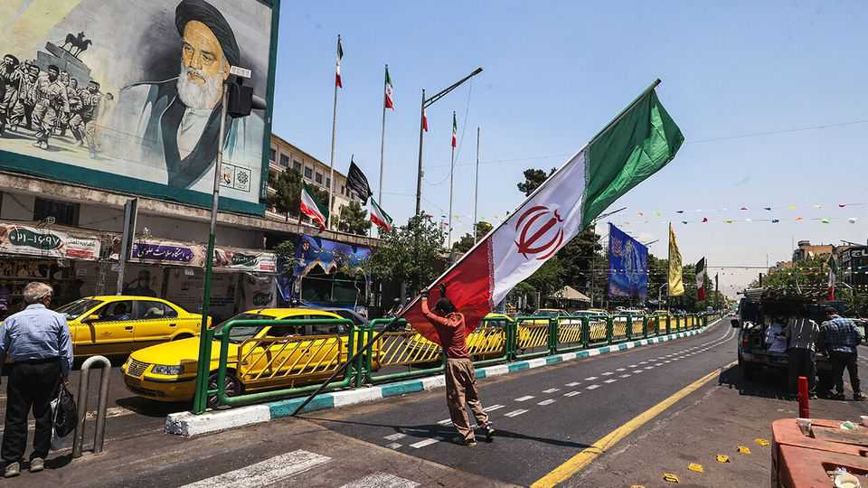

Even if America and Iran find an accord, don’t expect it to last
The Donald Trump Show could be back on air later this year
June 4th 2026

IT WAS another dramatic yet desultory week on “The Hormuz Apprentice”, a poorly rated reality-television show about Donald Trump’s war with Iran. America’s president said he was close to deciding on a deal to extend the ceasefire, only to demand more changes. Iran hinted it might abandon talks. Mr Trump said he too might “go silent”. They kept talking anyway. Missiles flew from both sides, as they have for weeks, despite a nominal truce.
For all the twists and turns, each episode ends on the same cliffhanger. America and Iran agree on the contours of a deal: prolong the ceasefire by at least 60 days; reopen the Strait of Hormuz; and deliver limited sanctions relief for Iran, which would pledge to roll back its nuclear programme. This is merely an interim accord. The parties would still need to negotiate a detailed final pact. Only then would Iran fulfil its nuclear promises and receive greater economic benefits.
Yet negotiations have stalled on seemingly narrow disputes. Iran wants to unlock a fraction of its roughly $100bn in frozen assets once the interim deal is signed. Mr Trump insists on clearer promises that Iran will not pursue a nuclear weapon and will relinquish its stockpile of more than 400kg of near-weapons-grade uranium.
These seem like curious roadblocks. In theory, by the end of summer, Iran should hand over its uranium in return for a windfall. Why does it insist on a modest upfront payout of probably $6bn-12bn? Why is America’s president so fixated on language about Iran’s nuclear programme if it will not be binding anyway?
Both sides are behaving as if the interim accord will become permanent—or at least a long-term status quo. “It wouldn’t be the first time,” says an Arab diplomat in Washington. “We’ve seen Trump do this before.”
An unfinished deal would resemble the ceasefire that Mr Trump pushed Israel and Hamas, Palestinian militants, to accept in October. Pausing the Gaza war was meant to be a first step, with further talks to secure Hamas’s disarmament, Israel’s withdrawal and Gaza’s reconstruction. Eight months on, none of that has happened.
If an accord with Iran remains incomplete, the stakes would be far greater. Start with its nuclear programme. The highly enriched uranium might remain in Iran, where it is thought to be entombed in the facilities that America bombed last June. American and Israeli spies are no doubt watching them closely. Lindsey Graham, a Republican senator and ally of Mr Trump, suggests delineating a “circle of death” around the sites. “Anybody [who] goes inside...is going to die,” he told NBC last month. Other Republicans try to downplay the issue: even if Iran could retrieve the uranium, its enrichment sites are in ruins.
Yet it would not take many centrifuges to spin up a bomb’s worth of uranium. No surveillance programme is foolproof. Mr Graham’s scheme would require America to keep forces in the region on permanent standby. That seems a tall order. Though a vote on June 3rd by the House of Representatives to end the war is unlikely to do so, it reflects growing frustration with the conflict. If Iran cannot retrieve the uranium, it could still press ahead with other aspects of a nuclear-weapons programme: learning how to make uranium into a warhead and fit the warhead onto a missile. Leaving the stockpile in place would be an embarrassment for Mr Trump, who has long insisted that the war would end with Iran handing its “nuclear dust” to America.
Iran’s biggest concern would be economic. The war has caused billions of dollars in damage and thrown 1m people out of work. Year-on-year inflation hit 77% in May, and 114% for goods; one think-tank in Tehran calls these the highest figures since the second world war. Any upfront payment would be swiftly spent.
It would be more significant if Iran secured a waiver to export oil—which the Americans have proposed in order to avoid the uncomfortable image of Mr Trump sending cash to the regime. His allies insist that this concession could be reversed if Iran reneges on the interim deal or fails to reach a permanent one. Yet Iran could take a similar position on Hormuz. If the temporary becomes permanent, America could be hard-pressed to reimpose sanctions without the strait also closing again.
A half-finished deal means it would not return to normal soon. Iran would have to remove mines from Hormuz and declare it safe. That would allow hundreds of stranded vessels to rush for the exit (though it will take weeks for all of them to depart safely). A trickle of oil, gas and other commodities would return to markets.
But shippers and insurers might hesitate to send vessels back into the Persian Gulf lest they get stuck. Oil and gas producers would have to decide whether to make costly repairs to damaged facilities, knowing they might be attacked again.
Disruptions in the Gulf would stretch far beyond hydrocarbons. If the ceasefire holds through the summer, tourists might drift back as temperatures cool. Yet any sabre-rattling could bring another wave of cancellations. Firms might hold off on expansions until the situation is clearer. Expats might decide they are tired of the uncertainty and seek employment elsewhere.
This is not ideal for anyone, but it is arguably least bad for Iran, assuming it can export some oil. America, Israel and Gulf states would be left with persistent fear of an Iranian bomb and prolonged economic uncertainty. That means it may not be sustainable either. The producers may take a summer break—or perhaps work on a spin-off set in Havana—but Mr Trump’s show could be back on the air later this year. ■
Sign up to the Middle East Dispatch, a weekly newsletter that keeps you in the loop on a fascinating, complex and consequential part of the world.